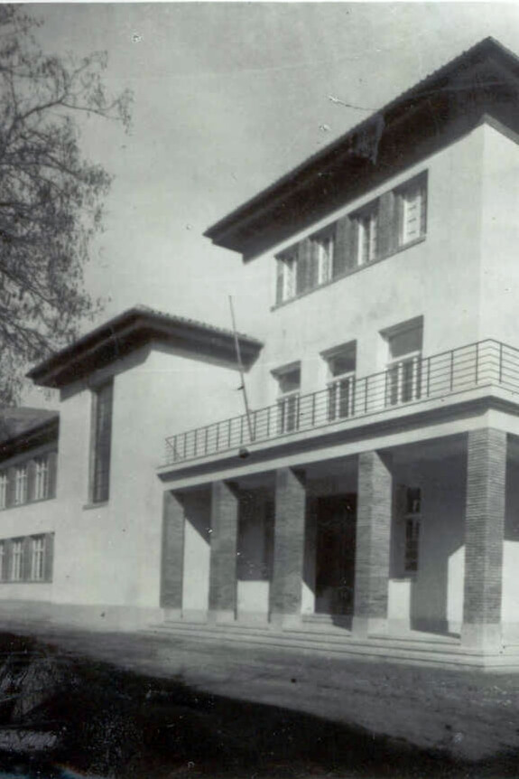

Ante esta situación surgió una corriente de opinión favorable a la creación de un nuevo centro de segunda enseñanza. En junio de 1927 se manifestaron las primeras iniciativas para buscar soluciones y se formó una comisión encargada de gestionar con el Ayuntamiento su fundación. Éste, en sesión de 29 de julio, acordó solicitar del gobierno el establecimiento de un Instituto de Segunda Enseñanza en Calatayud.
La fundación del Instituto data de 1928, bajo el reinado de Alfonso XIII y el gobierno de Miguel Primo de Rivera. A principios del siglo XX, Calatayud había perdido el colegio municipal de segunda enseñanza de La Correa. Colegios privados y academias surgieron como alternativas. El aumento de la población escolar en la década de los veinte sin la existencia de un centro docente oficial restaba eficacia a la segunda enseñanza y obligaba al alumnado a desplazarse a Zaragoza o Teruel para realizar los exámenes.
CFGM